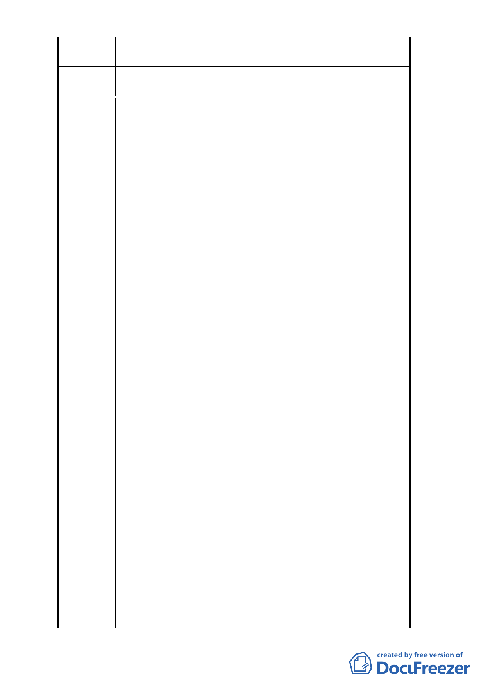

擬建議處
理意見
同編號4回覆內容。
委
決
員
會
議
同編號1。
編 號9
陳情人 陳○樺等 10 人（劉耀仁議員函轉）
陳情位置 松山區八德路四段 106 巷
主旨：關於臺北市松山區西松段三小段 162-2、162-3、175
、178、179、180、181、182、183、184、185、186
、187、188、189、190、191、192、193、182、183
、184、185、186、187、188、189、190、191、192
、193、194、197、198 地號等 24 筆土地受細部計畫
規定須交特定之開發公司以大街廓整體開發方式來
規劃，其中涉本人財產處分權益，至為不公，陳請
貴會同意依 102 年 9 月 12 日府都規字第 10235776100
號公告公開展覽內容，辦理變更細部計畫解除整體
開發與開發主體。
說明：
一、 旨揭土地位於「『修訂台北市土地使用分區（保護區
，農業區除外）計畫（通盤檢討案）』內有關八德路
四段、東寧路、縱貫鐵路、八德路四段 106 巷所圍
地區（原唐榮鐵工廠）土地使用計畫案」範圍內，
該計畫原規定須採取「大街廓整體開發」，並由威京
陳情理由
公司（威京投資開發股份有限公司）整體開發。惟
該計畫自民國 80 年公告以來，計畫範圍內仍有旨揭
範圍內土地尚未開發，其餘皆已依都市計畫開發完
成。
二、 旨揭土地地上物完成日期皆在民國 56 年-62 年間，
早已窳陋破舊不堪居住，且有結構安全上的顧慮若
遇地震等天災，恐有隨時倒塌造成公共安全危險與
生命財產損失之虞。相關所有權人為改善生活環境
與避免災害發生，曾於民國 97 年申請建築執照（申
請範圍為台北市松山區西松段三小段 186、187、188
、189、190、191 等 6 筆土地），但貴管都市設計審
議機關卻以受都市計畫規定大街廓整體規劃及指定
特定私人機構開發之限制，否准受理建築執照申請
。讓所有權人只能長期忍受居住在危樓下，苦不勘
言，若因無法改建而後因災害造成生命財產之損失
時，將保留對貴府法律請求之追訴權。
三、 爾後旨揭土地又在 98 年 9 月 30 日以 98 緯字第 66
號函依台北市自治條例第 12、15 條及「台北市未經
- 63 -